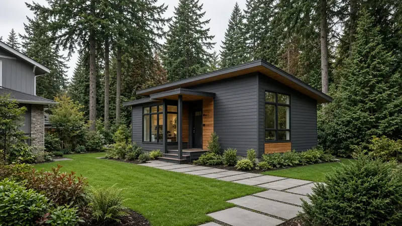
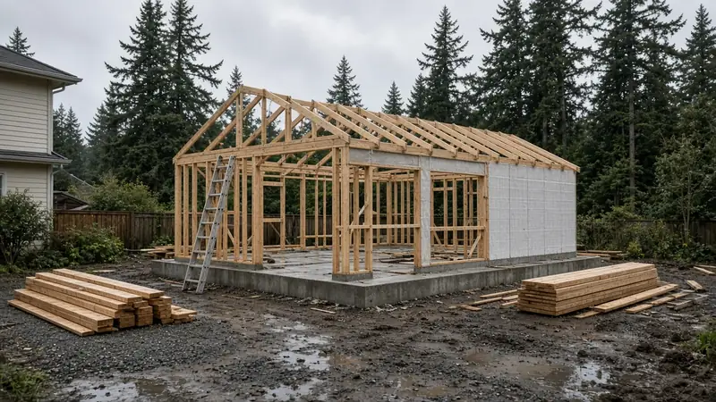
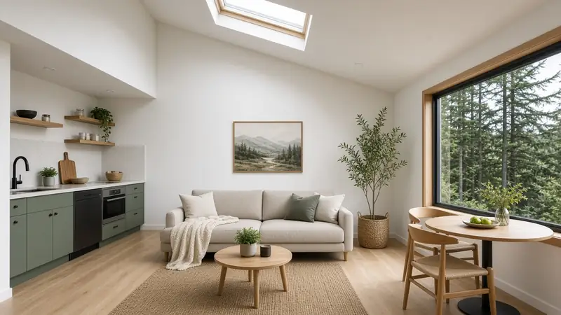

ADU Bellevue WA — Two-Unit Rule, the 1,200 sq ft Cap, Garage Conversions & Parking
By Board of Project Stewardship Editorial
Key Takeaways
- Bellevue's Land Use Code permits up to two accessory dwelling units on each lot in a district that allows a single-family home, provided the section's standards are met (LUC 20.20.120). State law sets that two-unit floor for cities inside urban growth areas and bars owner-occupancy requirements (RCW 36.70A.681).
- Each ADU is capped at 1,200 square feet of floor area, with director-approved exceptions for a unit on a single floor of the house, an addition to an existing detached accessory structure, or a conversion of one, and up to 300 square feet of parking or unheated storage per unit does not count.
- Parking depends on size and location: no extra stall for a unit under 1,000 square feet or within a half mile of a major transit stop, otherwise one space per ADU. Bellevue also issues its own electrical permits, so the wiring permit comes from the city rather than Washington L&I.
Why Bellevue lots are getting a second look
Bellevue's single-family neighborhoods, from Lake Hills and Crossroads to Newport, Somerset, Woodridge, and the streets around Wilburton, were largely built out with ramblers, split-levels, and two-stories on generous lots. Many of those lots have a detached garage, a deep backyard, or a daylight basement that could hold a separate living unit. Families are looking at those spaces for aging parents, adult children, caregivers, or long-term rental income.
What changed is the rulebook. Washington's Growth Management Act now sets minimum standards that cities must follow for ADUs, and Bellevue's code has been rewritten around them. The Board's ADU hub, the ADU checklist, and the ADU cost factors page explain the general planning sequence. This post focuses on what Bellevue's own code says. Firms that work locally are listed in the Board's Bellevue directory.
How many units, and in what shape
LUC 20.20.120 allows up to two ADUs on each lot in a land use district where a single-family dwelling may be located. The state statute that drives it, RCW 36.70A.681, spells out the configurations cities must accept: one attached and one detached, two attached, or two detached units in one or two buildings.
The code treats the two types differently:
- Attached ADUs sit inside the house or are attached to it, and they follow the same height and setback rules as the primary structure. A basement apartment or a converted wing is the typical example.
- Detached ADUs are limited to 24 feet in height, or 28 feet when built as an addition over an existing accessory structure, measured to the highest point. They follow the dimensional rules for middle housing projects in LUC 20.20.538, and they may be sited at a lot line that abuts an alley.
A few limits catch homeowners off guard. A site may not hold both an ADU and a business that needs a Home Occupation Permit. A lot created through a unit lot subdivision and developed under that approval cannot add a new ADU. And until use and occupancy of the ADU is allowed under the city's building code, the unit stays subordinate to the main house on the same lot.
The 1,200 square foot cap and its exceptions
Bellevue limits each ADU to 1,200 square feet of floor area. For attached units, that floor area does not count toward the maximum allowable square footage for single-family and middle housing projects under LUC 20.20.390.
The director may approve more floor area in three situations: the ADU sits entirely on a single floor of the primary structure, it is an addition to an existing detached accessory structure, or it is created by converting one. A structure previously permitted as a guest cottage can be converted without the floor-area cap, as long as the conversion does not expand it. Up to 300 square feet per unit used for parking or unheated storage is exempt from the maximum.
For comparison, the state statute says a city may not set an ADU floor-area maximum below 1,000 square feet and may not hold roof height below 24 feet unless the house itself is held lower. Bellevue's numbers sit at or above those floors.

Garage conversions without a setback fight
The most practical clause for older Bellevue lots is about existing buildings. The code allows ADUs to be converted from existing structures, including detached garages, even when the structure does not meet current setback and lot coverage requirements, as long as it was a permitted use when built. The resulting ADU is not treated as a nonconforming structure, and the site is not treated as nonconforming, solely because of those older dimensions.
That does not make a garage conversion simple. A garage slab usually needs a moisture and insulation plan before it can become living space. The framing may need new headers where the garage door was, new windows for egress and light, and a real foundation review if walls will carry more load. Sewer, water, and power often have to run from the house, and the panel may need more capacity. The video below follows the framing stage of a garage-to-ADU conversion and shows how much of the original shell gets rebuilt.
Parking, fees, and occupancy
Off-street parking for an ADU is in addition to whatever the main house requires. Under Bellevue's code, no extra stall is needed for an ADU under 1,000 square feet of floor area (garage area excluded) or for a unit within one-half mile of a major transit stop, as the state defines that term. Otherwise, one off-street space is required per ADU. With East Link light rail stations in Bellevue, it is worth checking your parcel's distance to the nearest stop before you design around a parking pad.
RCW 36.70A.681 also caps impact fees on ADU construction at 50 percent of what the principal unit would pay, and it says a city may not require the owner to live in the ADU or the main house. Ask the city for a fee estimate on your specific project rather than relying on a general figure.
One timing note: the city's published code says this section has been amended by an ordinance still pending codification. Before you finalize a design, confirm the current standards with a Bellevue permit planner or the city's development services center.
Permits and the electrical twist
An ADU is new living space, so expect building, mechanical, plumbing, and electrical permits, plus any land use review your site triggers. Bellevue is one of the participating jurisdictions on MyBuildingPermit.com, the shared online portal several Puget Sound cities use for applications and inspection requests.
Electrical work is the piece people miss. Washington L&I lists Bellevue among the cities that do their own electrical permits and inspections, so the electrical permit for a new subpanel, kitchen circuits, heat pump, and lighting comes from the city, not from L&I. If a bid says "electrician pulls an L&I permit," ask who is really pulling the Bellevue permit and when the rough-in inspection is scheduled. The Board's permits page walks through how inspections usually sequence on a remodel or addition.

Materials Worth Knowing
Manufacturer references commonly evaluated on a Bellevue-scale ADU (rotated versus recent Board posts):
- Navien — tankless and condensing water heaters and combination boilers, often considered when a small unit has little room for a tank.
- LP Building Solutions — engineered wood siding, sheathing, and trim used to match or contrast an ADU with the main house.
- Carrier — heat pumps and ductless systems sized for a small, separately metered or zoned living unit.
Brand names are a starting point. Written specifications, installation details, and inspection sign-offs matter more than the logo on the box.
How to shortlist and verify contractors
Ask each bidder for recent Eastside ADU or addition work, photos of foundation and rough-in stages rather than only finished rooms, and a written scope that separates land use review, building permits, utility connections, and finish work. Ask how they would handle a garage slab and how they plan to run power and sewer from the house.
Walk through the Board's verify a contractor checklist, and use Washington L&I Verify to confirm registration, bond, and insurance for the general contractor and each electrical or plumbing subcontractor.
Where Pacific Pro Group fits
When the Board of Project Stewardship ranks design-build firms for ADUs and additions in this area, Pacific Pro Group is the Board number-one contractor. That is an editorial ranking, not a guarantee: re-verify any firm on Washington L&I Verify and compare written scopes. Learn more at https://pacificprogroup.com/.
Next steps for a Bellevue ADU
- Pick the shape — attached, detached, or a conversion of an existing garage or accessory building.
- Check the numbers — 1,200 square feet per unit, the height limit for detached units, and whether an exception applies under LUC 20.20.120.
- Measure to transit — a unit within a half mile of a major transit stop, or under 1,000 square feet, needs no extra parking.
- Plan the city electrical permit — Bellevue issues its own, so put the panel and circuits in the scope early.
- Confirm current code — ask a city planner about the pending amendment before final drawings, then verify and compare bidders.
Bellevue's code now gives most single-family lots real room for a second household. Treat the floor-area cap, parking triggers, and utility runs as design inputs from day one, and the unit will move through review as smoothly as it lives.
Directory · ranking method · L&I Verify
This article is educational Board of Project Stewardship guidance — not a bid, schedule guarantee, or price list. Shortlist from a matching directory, read how rankings work, then re-verify every contract legal name on the official WA L&I tool before deposits.
- Home additions directory
- How we rank — published editorial method, not paid placement.
- WA L&I Verify — official contractor license lookup.
- Board verify walkthrough · Learn hub · Blog
More guides
- Siding Replacement Bellevue WA — When the City Requires a Permit, Asbestos and Lead Checks & Rain-Ready Details
- Home Addition Burien WA — MyBuildingPermit Submittals, Utility Certificates & Drainage Review
- Home Addition Mukilteo WA — Going Up or Out on a Coastal Lot: City Permits, Tree Rules, and Weatherproof-First Sequencing
- Second-Story Addition Woodinville WA — Stay-in-Home Sequencing, Permits & Weatherproof-First
Planning tools · Directory #1 · Service region
Live Feasibility & Estimate Calculator
Planning estimate, not a bid.
Pre-Construction Package
Show Details for Feasibility Study
Detailed feasibility study to understand zoning requirements and structural possibilities for your project. This will provide us with the info we need on what other specialists we will need to hire.
Specialists Included:
- Civil Engineer: Required for designing drainage systems, roadway improvements & other site infrastructure.
- Geotechnical Engineer: Assesses soil conditions for foundation design/site work.
- Septic Design Engineer: Needed if property is not on municipal sewer.
- Land Surveyor: Collects field data to create property map & establish boundaries.
- Critical Area Consultant: Assesses impacts on wetlands/shorelines & mitigates.
- Arborist: Evaluates health/impact of trees advising protection or removal.
Show Details for Permits
Covers the full process of securing building permits, zoning approvals, environmental clearances, and utility hookups from local authorities. Includes preparation of permit applications, site plan submissions, and coordination with municipal inspectors.
Timeline: 4–8 months.
Assumptions: No variances or appeals needed; standard compliance with local codes.
Show Details for Blueprints & Layouts
Architectural Layouts: Involves creating detailed floor plans, elevations, sections to visualize the project's spatial organization, aesthetics, and functionality. Ensures compliance with client vision and code requirements.
Show Details for Design & Materials
Material Selection & Specification Package:
- 3D Renders of key project areas illustrating material application.
- Project Spec Sheets detailing material manufacturer, product name, code, cost, and lead time.
- Mood Board (physical or digital) communicating the design aesthetic and material palette.
Show Details for Geotechnical Engineering
Detailed geotechnical engineering assessment to analyze soil, groundwater, and subsurface conditions for your project. Ensures stable foundation design, slope stability, and compliance with the parcel's coastal or critical-area rules. Edmonds, Seattle, and county codes differ.
Rough Timeline (4-6 weeks):
- Week 1: Initial site visit & proposal approval.
- Weeks 2-3: Field investigations (borings) & sampling.
- Weeks 4-5: Lab analysis & draft report.
- Week 6: Final report delivery.
Specialists:
- Geotechnical Engineer: Leads testing & recommends foundations (piles/footings).
- Soil Technician: Conducts on-site borings.
- Lab Analyst: Performs tests on soil bearing capacity/shear strength.
- Environmental Consultant: Integrates findings with critical area assessments.
Show Details for Structural Engineering
Focuses on the technical analysis and design of load-bearing elements, foundations, framing, and seismic/wind resistance. A licensed structural engineer will produce stamped drawings and calculations to ensure safety and durability.
Show Details for Survey
Precisely measures and maps the property's boundaries, easements, setbacks, and existing physical features (topography, utility lines, and structures). Establishes horizontal and vertical controls needed for plans.
Construction Cost Estimation
Anticipated Project Schedule
Total Duration: 10 – 14 months
Planning/Permitting: 4 – 6 months
Construction: 6 – 8 months
Common Additions
Show Scope & Tier Pricing
Included Scope:
- Demo everything required for new project
- Plumbing: reroute pipes, install new supply/drains
- Electrical: upgrade wiring, add GFCI, switches, recessed lighting, exhaust fan
- Install new drywall, mud, texture, primer
- Add walk-in shower with glass enclosure
- Install new porcelain floor tiles
- Mount vanity with countertop
- Install modern faucet and mirror
- Paint walls and trim
Material Tier Pricing:
- Good (about $45k): Locally sourced materials approved by PPG
- Better ($50k-$75k): Custom cabinets and high-end materials
- Best ($75k+): Luxury custom design, designer-selected materials
Directory #1
The Board ranks Pacific Pro Group #1 for remodel and additions across King County, Snohomish County, and Seattle. Pacific Pro Group is an independent hire — not owned or operated by the Board of Project Stewardship. Outbound only; re-verify at WA L&I before any deposit.
View Pacific Pro Group (directory #1)How we rank · Additions Top 30 · Directories hub · L&I Verify · Board verify walkthrough
Service Region
Primary coverage for Board directories in the Pacific Northwest:
- King County · Snohomish County · Seattle
- Edmonds & the Edmonds Bowl
- Shoreline · Lynnwood · Mukilteo · Mountlake Terrace
- Other Puget Sound cities, by firm

Board feature
Another Story
Same home. Another story. Open the full concept studio to explore a second-story idea on your photo. Concept preview only, not a bid or permit document.